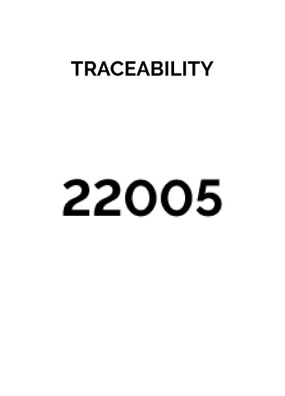
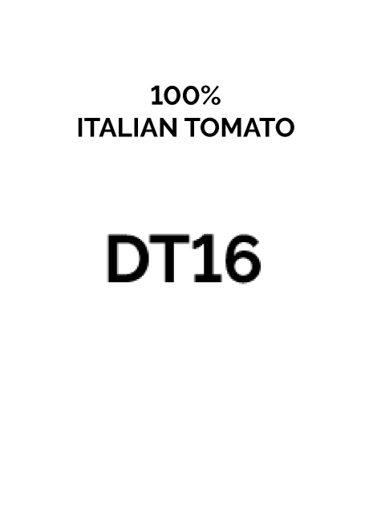
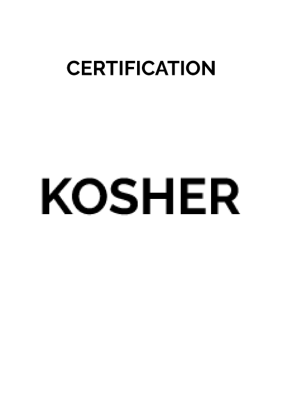
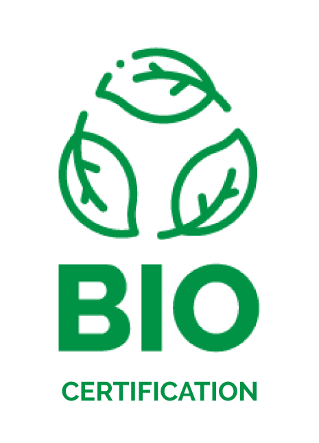
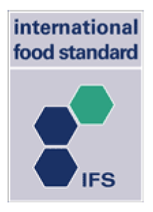

איכות ותקנים
מעקב מלא מאושר
אנחנו מתחייבים למעקב מלא בכל שלב ושלב — מהזריעה, דרך הגידול בשדות, הקטיף, ההובלה, כל תחנה בקו הייצור, ועד לכל אריזה שיוצאת מהמפעל. אמון הלקוחות שלנו הוא היעד המרכזי, ובלעדיו לא היינו יכולים לעשות את מה שאנחנו עושים כבר יותר משישה עשורים. השקיפות הזו אינה מחווה — היא חלק בלתי נפרד מהאיכות.
קיימות
המחויבות שלנו ברורה: לשאוף לתוצאות מרביות בהשפעה סביבתית מזערית. אנחנו פועלים ביום-יום להתייעלות אנרגטית, הפחתת פסולת ואימוץ עקרונות של כלכלה מעגלית בכל שלב בייצור.
בין הפעילויות שלנו:
- קליפות וגרעיני העגבניות משמשים כמזון לתאואים המגודלים באזור.
- פסולת צמחית מוחזרת לאדמה כדשן טבעי, וסוגרת את המעגל האגרונומי.
- אדמה שטופלה במתקן הטיפול הביולוגי שלנו בשפכים חוזרת ומוגשת לשדות.
- מי שטיפת העגבניות מטופלים וממוחזרים חזרה אל תוך תהליך הייצור.
- רוב האריזות שלנו ניתנות למחזור או להחזרה; שיטת האחסון בטנקים גדולים מפחיתה משמעותית את פסולת האריזה.
- שימוש בתחבורה אינטרמודלית — מרחקים קצרים על גלגלים, רוב ההובלה על מסילה — מפחית פליטות פחמן דו-חמצני.
- מחוללי אדים מהדור החדש, פאנלים סולאריים בשטח נרחב, ומעבר הדרגתי מדלקי מאובן למקורות אנרגיה מתחדשת.
- מאדה מהדור החדש שהותקן לאחרונה הפחית עד 40% מפליטות הפחמן הדו-חמצני בכלל הייצור.
התעודות שלנו




